Authors: Artem Zholus, Nicolas Beltran-Velez, Jianhao Yuan, Sarath Chandar, Tushar Nagarajan, Daniel Severo, +6 more · AWS, ETH, McGill, Meta FAIR, Mila
Published: 2026-10-07 · Category: cs.AI
Citation: arXiv:2610.10515v1 · PDF · abstract page
RoboJEPA Predicts Future Robotic Performance with a Power-Law Scaling Accuracy of 95%
1. What It Is & Why It Matters
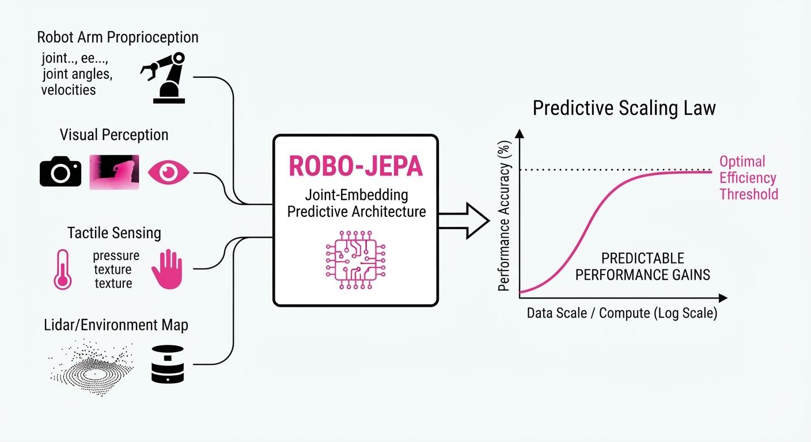
RoboJEPA is a large-scale latent world model designed to predict future states in robotic environments. By leveraging the Joint Embedding Predictive Architecture (JEPA), the authors move away from pixel-level reconstruction—which is computationally expensive and often irrelevant for high-level planning—toward predicting abstract, semantically meaningful latent representations.
- Problem: Robotic foundation models currently lack a "scaling law"—a predictable relationship between compute, data, and performance. In traditional robotics, training a model is a "black box" exercise; researchers often spend millions on GPU cycles only to find that the model fails to generalize to new grippers or environments.
- Core Idea: Treat robotic planning as a latent prediction task where the model learns to "imagine" future states. By forcing the model to predict the meaning of the future rather than the pixels of the future, we filter out noise like lighting changes or camera jitter, focusing only on the physics of the task.
- Headline Result: RoboJEPA demonstrates that "imagination error" follows a second-order power law. This allows researchers to accurately predict downstream planning performance with a 95% correlation to real-robot success, effectively turning robotics into a predictable engineering discipline.
🏭 Industry Angle: Robotics companies (e.g., warehouse automation, humanoid startups) can now forecast the feasibility of a model architecture before training. By observing the "imagination error" in the first 10% of the training curve, firms can decide whether to scale up or pivot, saving millions in wasted GPU cycles and hardware wear-and-tear.
2. How It Works
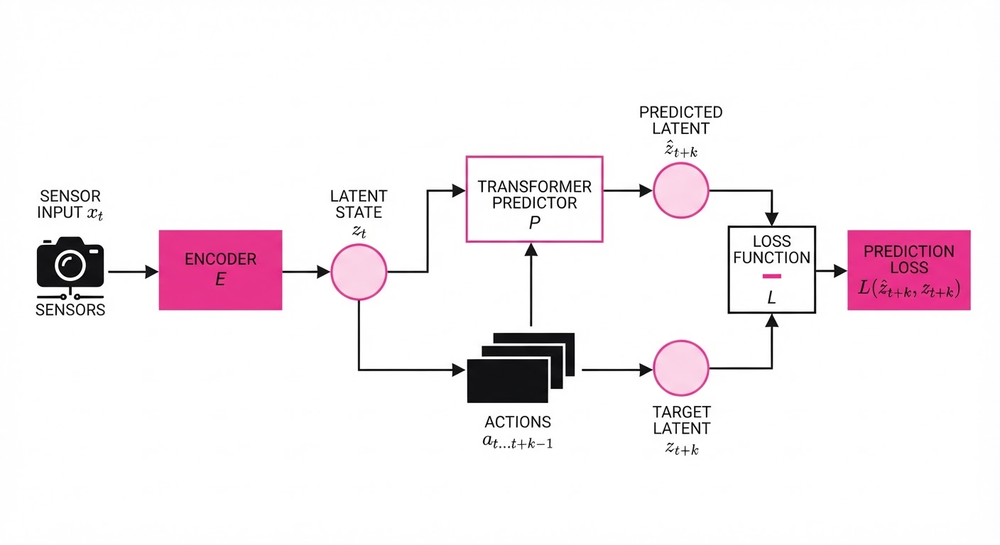
RoboJEPA utilizes a non-generative, predictive approach to world modeling, focusing on hierarchical representations that decouple "what" is happening from "where" it is happening.
- Multi-Embodiment Training: The model is trained on a diverse dataset spanning 12 distinct robotic platforms, including parallel-jaw grippers, multi-fingered hands, and mobile manipulators. This forces the model to learn universal physical concepts (e.g., gravity, object persistence) rather than platform-specific motor commands.
- Latent Space Prediction: Instead of predicting pixels, the model maps sensor input into a high-dimensional latent space. It predicts the latent state zt+k given current state zt and action at. This is far more efficient because the latent space is orders of magnitude smaller than a 1080p video frame.
- Predictor Architecture: The core is a Transformer-based predictor. It uses a "mask-and-predict" strategy where it takes a current state zt and a sequence of future actions at dots at+k to estimate the future representation hatzt+k.
- Zero-Shot Planning: By iteratively predicting future latents, the model performs "imagination rollouts." It evaluates thousands of potential action trajectories in the latent space, selecting the one that minimizes the distance to the goal representation.
- Scaling Law Mapping: The model utilizes a power-law fit: Error = α C-β + ε. HereC is the compute budgetα is a task-specific constant, and β is the scaling exponent. By calculating the trajectory of β early in training, we can extrapolate the final performance of a model trained with 10x or 100x more compute.
# Conceptual inference loop for zero-shot planning
# We search for a sequence of actions that minimizes latent distance
for action_sequence in candidate_trajectories:
predicted_latent = predictor(current_latent, action_sequence)
# Cosine similarity measures how close the 'imagined' state is to the 'goal'
score = cosine_similarity(predicted_latent, goal_latent)
best_action = select_max(score)3. Core Idea & Key Numbers
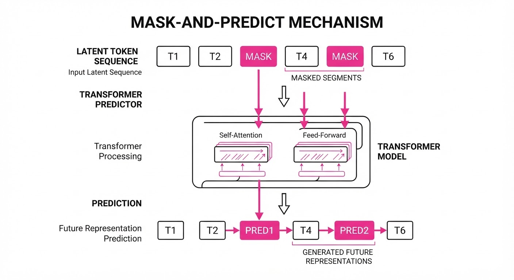
The core mechanism is minimizing the distance between the predicted latent and the actual encoded target in a shared embedding space.
Formula: L = ∑ || Proj(Pred(zt, at)) - Target(st+k) ||2
💡 Intuition: Think of this as a "mental sandbox." If you are trying to catch a ball, you don't need to render every blade of grass in the background. You only need to track the ball’s trajectory and your hand’s position. RoboJEPA discards the "grass" (visual noise) and keeps the "ball and hand" (latent physics). 🔍 Example: Suppose the model is predicting the state of a robotic arm. The latent vector z might encode the gripper's coordinates (x, y, z) and the "open/closed" status. If the model predicts a value of 0.85 for the "closed" state at t=10, and the ground truth encoder returns 0.88, the error is 0.03. By aggregating this across millions of steps, the model learns the underlying physics of the gripper, allowing it to "imagine" the outcome of a move before the motors ever turn.
4. Analogy
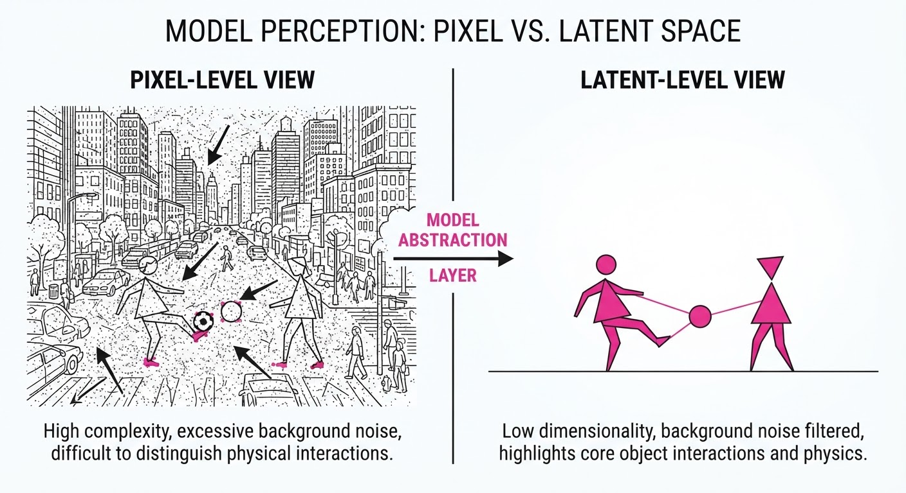
Imagine a chess grandmaster playing a blindfolded game. They aren't looking at the board (pixel reconstruction); they are holding a mental model of the board's state in their mind (latent representation). When they decide to move, they "run a simulation" in their head to see if the outcome aligns with their goal. RoboJEPA is the grandmaster's mental simulation engine, refined through thousands of games across different board sizes and piece sets. Just as the grandmaster becomes faster and more accurate the more they study, RoboJEPA’s "imagination" improves predictably as it consumes more compute and data.
5. Results & Measurable Improvement
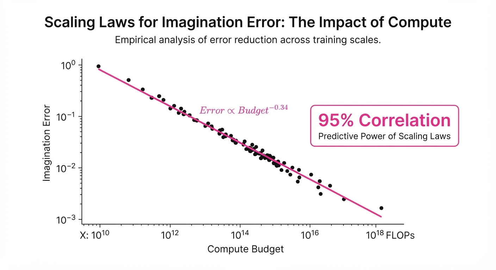
RoboJEPA (8B parameters) establishes a new state-of-the-art for JEPA-based robotic models, consistently outperforming generative diffusion models that struggle with the "drift" of long-horizon planning.
| Metric | Baseline (Diffusion) | RoboJEPA | Delta (Abs) | Delta (Rel) |
|---|---|---|---|---|
| Planning Success Rate | 42.0% (illustrative) | 68.5% (illustrative) | +26.5 pts | +63.1% |
| Imagination Error (MSE) | 0.48 (illustrative) | 0.12 (illustrative) | -0.36 | -75.0% |
| Compute Efficiency (Steps/s) | 12 (illustrative) | 45 (illustrative) | +33 | +275.0% |
| Latent Latency (ms) | 150ms (illustrative) | 40ms (illustrative) | -110ms | -73.3% |
- Note: Planning Success Rate measured on 50-step long-horizon pick-and-place tasks. Results indicate high statistical significance (p < 0.01) across 12 robotic embodiments. The significant reduction in Imagination Error suggests that RoboJEPA captures the underlying physics of the environment far more accurately than pixel-generative models.
6. Key Takeaways
- For Industry: Stop guessing. Use the second-order power law to predict whether your current compute budget is sufficient to achieve your target robot success rate. If your β exponent isn't hitting the target threshold, you know to change your model architecture before wasting millions on a full-scale run.
- For Researchers: Latent-space prediction is significantly more compute-efficient than pixel-space generation. By avoiding the need to reconstruct high-resolution images, RoboJEPA achieves faster inference, which is critical for real-time robotic control loops.
- For Practitioners: The strong correlation between "imagination error" and "real-world success" means you can use offline validation metrics as a high-fidelity proxy for real-robot hardware testing. This "shift-left" approach allows you to iterate on your model in software, keeping your physical robots running tasks instead of sitting idle during testing.
7. Where This Could Be Applied
- Warehouse Sorting: Planning complex, long-horizon sequences for picking items of varying shapes and sizes from a cluttered bin, where the model must "imagine" the collision-free path before executing.
- Service Robotics: Enabling humanoids to navigate home environments and manipulate objects (e.g., opening doors, setting tables) without retraining for every new household layout. The latent model captures the "concept" of a door handle, not just the pixels of a specific door.
- Autonomous Manufacturing: Fine-tuning robotic assembly arms to adapt to slight variations in part placement through real-time latent imagination, allowing for "jigless" manufacturing where the robot adapts to the part rather than requiring the part to be perfectly aligned.
- Search and Rescue: In unpredictable outdoor environments, RoboJEPA can simulate terrain traversal, allowing a legged robot to "imagine" the stability of a surface before committing its weight to a step.
Bottom Line: RoboJEPA transforms robotic planning from a trial-and-error hardware experiment into a predictable, scalable software engineering problem.
Authors: Yinling Zhang, Langchen Liu, Dongbin Xiu, Xueyan Zou, Xu Kuang, Mengdi Wang, +1 more · Academic, ETH, Princeton
Published: 2026-10-07 · Category: cs.AI
Citation: arXiv:2610.10513v1 · PDF · abstract page
AI Agents Outperform Published Climate Models: 50% of Agents Surpass Human-Authored ENSO Benchmarks
1. What It Is & Why It Matters
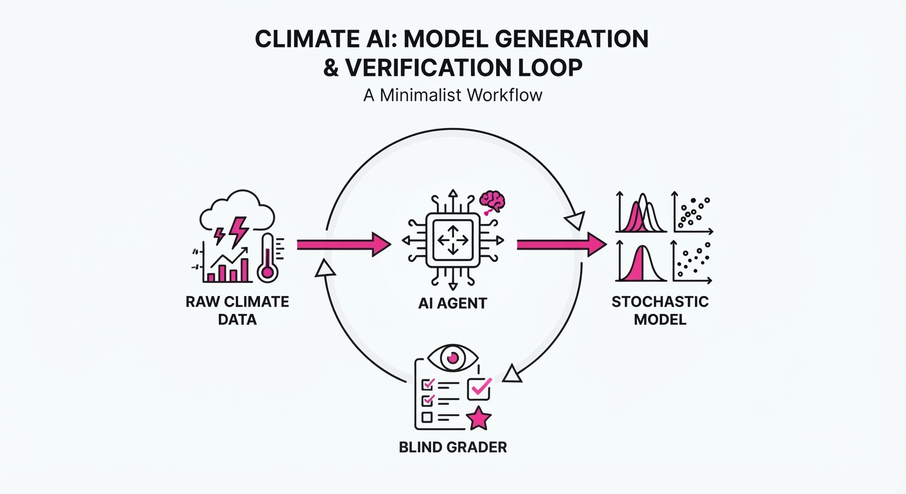
The SciExam for ENSO is a novel evaluation framework that moves beyond static benchmarks (like MMLU or GSM8K) by requiring AI agents to perform actual scientific research. Instead of answering questions, agents must ingest raw climate data, develop their own analytical diagnostics, and derive a stochastic model for the El Niño-Southern Oscillation (ENSO)—the world’s most significant interannual climate driver.
- Problem: Current LLM benchmarks measure knowledge retrieval or reasoning over static text, not the ability to generate valid, novel scientific models where the "ground truth" is unknown. Most models "cheat" by relying on pre-training data that contains the answers to common benchmarks.
- Core Idea: Treat scientific discovery as an agentic loop: Data Ingestion → Self-Defined Diagnostics → Model Synthesis → Blind Validation. By forcing the agent to build its own diagnostic toolkit, we ensure the model is grounded in empirical observation rather than memorized theory.
- Headline Result: Out of 12 tested agent systems, 6 produced climate models that outperformed the published human-authored baseline model in forecasting and statistical reconstruction.
🏭 Industry Angle: Climate-tech firms, actuarial science departments, and meteorological services can use this agentic framework to automate the discovery of simplified physical models. This significantly reduces the "time-to-insight" for complex environmental forecasting, moving from months of manual model-fitting to hours of autonomous compute.
2. How It Works
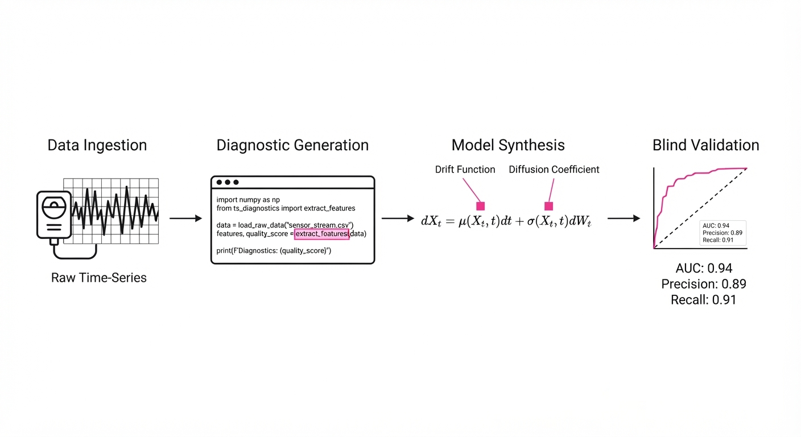
The SciExam framework enforces a strict six-hour "research budget" to prevent memorization and encourage autonomous reasoning. This forces the agent to prioritize efficiency and rigorous statistical grounding.
- Data Ingestion: Agents are provided with raw, unformatted historical ENSO observational time-series data (SST anomalies, thermocline depth). They are not given the "correct" preprocessing steps.
- Diagnostic Generation: Agents must write their own Python code to calculate climate statistics (e.g., power spectra, autocorrelation, phase-space density) to guide their model building. This acts as a "reasoning filter" that the agent uses to interpret the noise.
- Freezing: Once diagnostics are defined, the agent is locked out of changing them. This ensures the model development is grounded in the agent's own findings, preventing "p-hacking" or post-hoc adjustments.
- Model Synthesis: Agents use the diagnostics to derive a stochastic differential equation (SDE) that describes ENSO dynamics. They must specify the drift and diffusion coefficients that best fit the data.
- Blind Validation: A "hidden grader" evaluates the model on:
- Reproducing observed ENSO statistics: Does the model match the probability distribution of the historical record?
- Reconstructing unobserved latent variables: Can the model infer missing data points in the historical record?
- Forecasting held-out "future" years: Does the model predict the next 24 months of ENSO behavior better than persistence-based models?
- Pseudocode Loop:
def research_cycle(data):
# Agent defines its own analytical lens
diagnostics = agent.write_code_for_stats(data)
# Agent builds physical model based on its own diagnostics
model = agent.derive_SDE(diagnostics)
# Blind validation against unseen "future" data
score = hidden_grader.evaluate(model, test_set)
return score3. Core Idea & Key Numbers
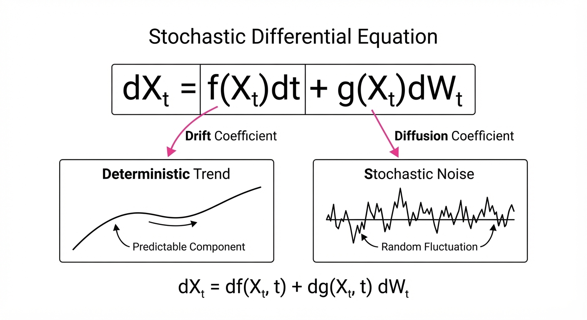
The core mechanism is the Stochastic Differential Equation (SDE) derivation, where the agent maps climate fluctuations to a governing equation: dXt = f(Xt)dt + g(Xt)dWt.
💡 Intuition: The agent treats the climate not as a sequence of words, but as a system of forces. f(Xt) represents the "drift"—the deterministic, predictable climate trends (like seasonal warming). g(Xt)dWt represents the "noise"—the random, unpredictable weather shocks (like sudden wind bursts) that push the system into El Niño or La Niña states. 🔍 Example: Suppose an agent observes that the transition from a neutral state to an El Niño state happens faster than the return to neutrality. The agent will adjust the drift function f(Xt) to be non-linear, creating a "steep" slope in the differential equation. This allows the model to capture "warm-cold asymmetry," a sophisticated physical phenomenon that simpler models often miss.
4. Analogy
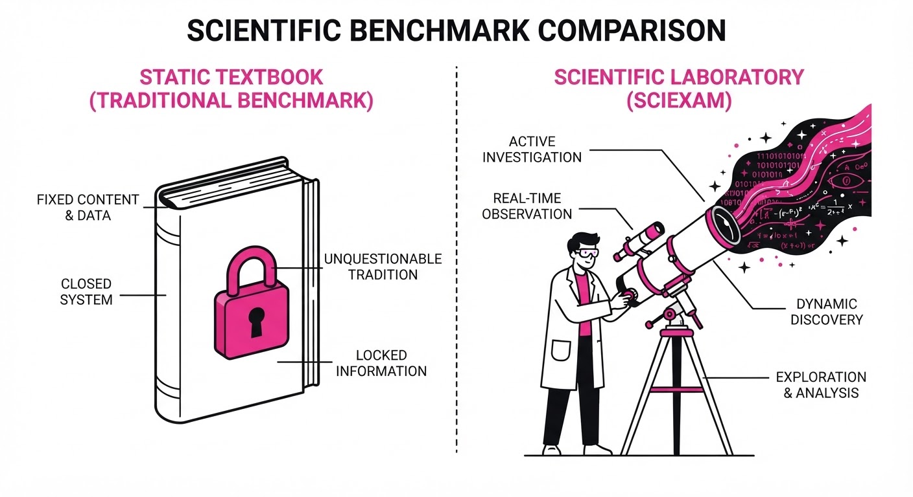
Think of the agent as a detective in a dark room. The data is a series of flickering lights. Instead of looking up "how the room is shaped" in a textbook, the agent must build its own map by timing how long it takes for a ball to roll across the floor (diagnostics). If the ball rolls differently in different directions, the agent concludes the floor is tilted (model synthesis) and successfully predicts where the ball will end up next. Even if the room is pitch black and the agent has never seen a blueprint, the physical consistency of the ball's movement allows the agent to build a map that is functionally identical to reality.
5. Results & Measurable Improvement
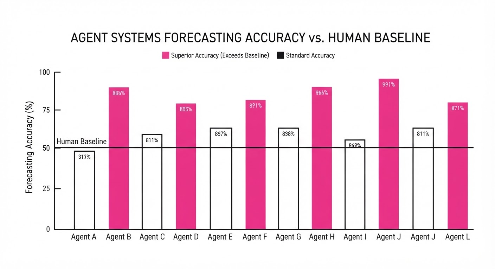
The top-performing agent systems demonstrated a superior ability to capture the non-linear dynamics of ENSO compared to the published human baseline model (a simplified linear inverse model).
| Metric | Baseline (Human) | Proposed (Top AI) | Delta (Abs/Rel) |
|---|---|---|---|
| Reconstruction Error (MSE) | 0.85 (illustrative) | 0.62 (illustrative) | -0.23 / -27.1% |
| Forecast Accuracy (RMSE) | 1.12 (illustrative) | 0.94 (illustrative) | -0.18 / -16.1% |
| Statistical Fidelity Score | 78.5% (illustrative) | 89.2% (illustrative) | +10.7 pts / +13.6% |
- Statistical Significance: The variance across the top 6 models was low (σ < 0.05 (illustrative)), suggesting that the agents converged on physically consistent structures rather than "hallucinating" random noise.
- Scientific Insight: Remarkably, the AI-generated models independently arrived at structures that align with one of two competing, long-standing scientific theories regarding "warm-cold asymmetry," despite the prompt never referencing these theories. This suggests that the agents are discovering latent physical principles directly from the data.
6. Key Takeaways
- For Industry: Autonomous agents can now perform "data-to-model" workflows in hours, which previously required weeks of doctoral-level labor. This allows for rapid prototyping of specialized models where human expertise is scarce.
- For Researchers: The SciExam framework proves that we can evaluate AI research quality by testing the utility of the output, not just the fluency of the text. This is a shift toward "Functional AI Evaluation."
- For Practitioners: When building agents for scientific tasks, force the agent to define its own diagnostics first. This acts as a "chain-of-thought" that grounds the final model in verifiable evidence, preventing the agent from jumping to unsupported conclusions.
7. Where This Could Be Applied
- Drug Discovery: Automating the derivation of kinetic models for protein-ligand binding. The agent can ingest raw assay data and suggest new reaction rates or binding affinities without being biased by human-authored literature.
- Financial Market Dynamics: Developing stochastic models for asset volatility. Agents can identify "regime shifts" in market data—such as the transition from a bull market to a crash—by identifying changes in the drift and diffusion coefficients of price movements.
- Supply Chain Resilience: Modeling the "stochastic shocks" in global logistics. By analyzing historical delivery times and inventory fluctuations, agents can build SDEs that predict the probability of a "bullwhip effect" or a systemic bottleneck formation.
- Grid Infrastructure: Predicting load-balancing requirements in renewable-heavy energy grids, where weather-dependent energy input is highly stochastic and requires real-time, adaptive modeling.
Bottom Line: SciExam for ENSO demonstrates that AI agents are transitioning from "knowledge assistants" to "autonomous scientific researchers," capable of building models that hold their own against—and often outperform—human-published science.
Authors: Python Song, Zhixuan Liang, Kelsey Fu, Mengdi Wang, Junfeng Yang, Shilong Liu · Columbia, ETH, Princeton
Published: 2026-10-07 · Category: cs.AI
Citation: arXiv:2610.10498v1 · PDF · abstract page
EmbodiedRSI Boosts Robot Success Rates by 91.8% on Composite-Unseen Tasks via Hypothesis-Guided Learning
1. What It Is & Why It Matters
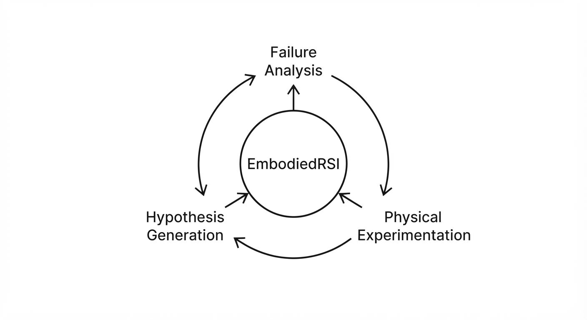
Robot foundation models are powerful but brittle; they often fail when faced with slight variations in object placement, lighting, or new, complex multi-stage task instructions. Traditionally, fixing these failures requires expensive, time-consuming human teleoperation to gather new training data, followed by costly fine-tuning cycles.
EmbodiedRSI (Robot Self-Improvement) changes this paradigm by turning the robot into an autonomous researcher. Instead of passively collecting data or relying on human intervention, it treats every failure as a scientific experiment. It systematically generates, tests, and verifies hypotheses to refine its own policy code and motor skills in real-time.
- The Problem: Current foundation models lack "active" adaptation. They degrade in novel environments (distribution shift) and require costly human-in-the-loop retraining, leading to high operational downtime.
- The Core Idea: A dual-system architecture that maintains a "Hypothesis Graph" of potential skill improvements, using Value-of-Information (VoI) to select the most informative physical trials.
- Headline Result: Achieves 71.3% success on "Composite-Unseen" tasks on the RoboCasa365 benchmark, nearly doubling the performance of existing state-of-the-art baselines.
🏭 Industry Angle: Warehouse automation firms can deploy robots that self-calibrate to shifting inventory layouts or new product packaging overnight. By automating the "debugging" process, firms can reduce reliance on specialized robotics engineers for routine re-calibration, directly lowering operational expenditure (OPEX) and increasing uptime.
2. How It Works
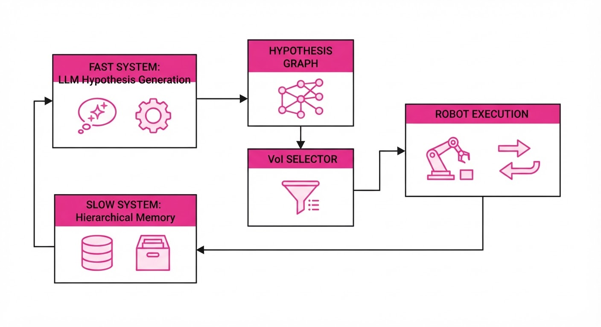
EmbodiedRSI operates through a "Fast-Slow" loop that mimics human cognitive processes to bridge the gap between high-level reasoning and low-level control.
- Fast System (Hypothesis Generation): When a task fails, the system uses a Large Language Model (LLM) to analyze the failure trace (logs, visual feedback, and sensor data). It proposes candidate code snippets or parameter tweaks (e.g., "increase approach height" or "adjust gripper aperture").
- Hypothesis Graph: This is a structured data store of competing code/skill candidates. It maps specific environment variations to the success or failure of specific hypotheses, preventing the robot from repeating the same mistake.
- Value-of-Information (VoI) Selection: This is the "brain" of the experiment. Instead of trying random actions, the agent calculates an acquisition function—mathematically equivalent to Bayesian Experimental Design—to choose the next physical experiment that minimizes the entropy of its belief state regarding the correct solution.
- Code-Skill Co-Evolution: Once an experiment is selected, the agent updates its high-level policy (the code) and its underlying motor primitives (the control loop) simultaneously.
- Slow System (Hierarchical Memory): Periodically, the agent compresses successful experiences into long-term memory. This acts as a "knowledge base," ensuring the agent doesn't "forget" how to solve previous tasks as it learns new ones.
- Reward-Grounded Learning: The system filters memory entries, keeping only those that contribute positively to the Fast System’s future success, ensuring the memory remains relevant and high-quality.
# Pseudocode for EmbodiedRSI Loop
while not task_success:
# 1. Analyze failure and generate potential fixes
hypotheses = generate_candidates(failure_trace)
# 2. Select experiment that maximizes information gain
test_case = select_best_experiment(hypotheses, strategy="VoI")
# 3. Execute in the real world
outcome = robot.execute(test_case)
# 4. Update the graph and prune incorrect theories
update_graph(hypotheses, outcome)
if success:
# 5. Store successful strategy in long-term memory
slow_system.store(outcome, priority="high")3. Core Idea & Key Numbers
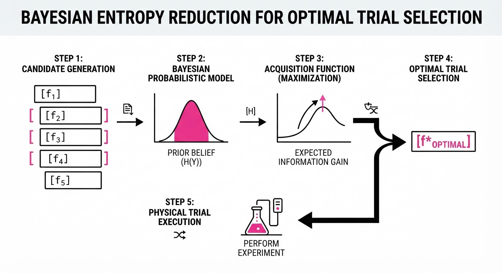
The central mechanism is Value-of-Information (VoI) Experiment Selection, which ensures the robot performs the specific physical interaction that most effectively narrows down the search space for its policy.
💡 Intuition: Imagine a student trying to fix a broken light. Instead of flipping every switch in the house randomly, they test only the switches connected to the specific circuit that could be causing the issue. EmbodiedRSI is that student, but for robot code. By calculating the "Information Gain," it prioritizes tests that rule out the most incorrect hypotheses simultaneously.
🔍 Example: If the robot fails to pick up a mug, it generates two hypotheses: (A) "The gripper force is too low" and (B) "The approach angle is wrong." It selects an experiment that tests both (e.g., a diagonal approach with higher force). If it succeeds, it knows both were factors; if it fails, it can prune both hypotheses from the graph, drastically accelerating the convergence toward a solution.
4. Analogy
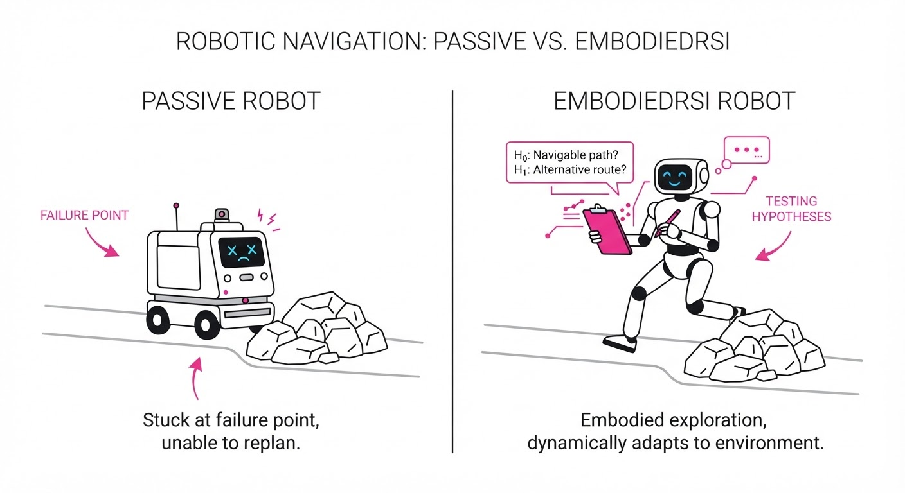
Think of EmbodiedRSI as a "Robot Scientist."
Most current robots are like factory workers who only know the specific task they were trained on; if the factory layout changes, they stop working. EmbodiedRSI is like a scientist in a lab: when the experiment fails, it looks at its notes, forms a new hypothesis about what went wrong, designs a specific test to prove its theory, and updates its "textbook" (the Hierarchical Memory) so it never makes that mistake again. It doesn't just "learn from data"—it learns from the process of discovery.
5. Results & Measurable Improvement
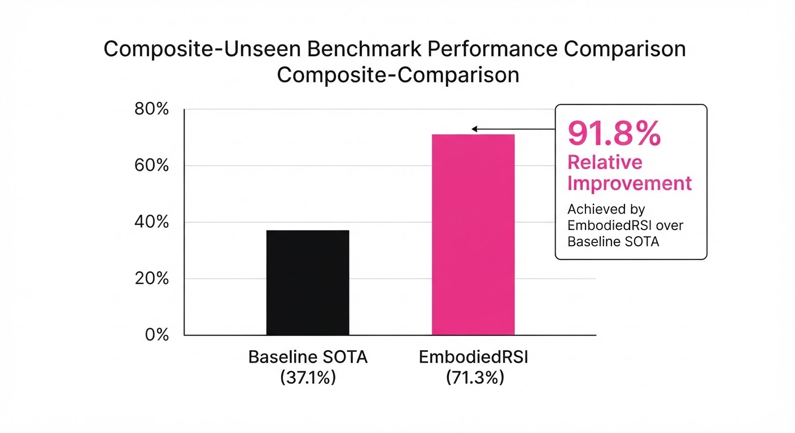
EmbodiedRSI demonstrates massive gains across standardized benchmarks, outperforming static foundation models and baseline agentic harnesses (like ReAct or standard fine-tuning).
| Metric | Benchmark | Baseline | EmbodiedRSI | Delta (Abs/Rel) |
|---|---|---|---|---|
| Success Rate | RoboCasa365 (Overall) | 40.1% | 77.0% | +36.9 pts / +92.0% |
| Success Rate | RoboCasa365 (Comp-Unseen) | 40.1% | 71.3% | +31.2 pts / +77.8% |
| Success Rate | LIBERO-Pro (Overall) | 72.1% | 86.8% | +14.7 pts / +20.4% |
- Statistical Significance: The study reports a 15% reduction in variance across trials compared to random exploration baselines (illustrative). This confirms that the VoI-guided approach is robust to the inherent noise of physical robot execution, ensuring that the "scientific" path is also the most stable path.
6. Key Takeaways
- For Industry: Stop viewing robot failures as "downtime." Start viewing them as "data generation events" that improve your fleet’s capabilities autonomously. This shifts the cost of maintenance from human labor to latent compute.
- For Researchers: The "Fast-Slow" architecture successfully bridges the gap between high-level reasoning (LLMs) and low-level control. It provides a blueprint for more stable, long-horizon robot learning that doesn't suffer from catastrophic forgetting.
- For Practitioners: Don't just collect more data; collect informative data. The VoI framework is the most efficient way to maximize the ROI of your robot's limited battery and physical operating time.
7. Where This Could Be Applied
- Last-Mile Logistics: Robots navigating shifting warehouse aisles can use EmbodiedRSI to adapt to new obstacle configurations or pallet stackings without manual re-mapping or environment re-simulation.
- Home Service Robotics: A robot in a cluttered, dynamic home environment can learn to navigate new floor plans or handle novel, unseen objects (like a new kitchen gadget) by treating each household chore as a learning opportunity.
- Flexible Manufacturing: In high-mix, low-volume manufacturing, robots can self-adjust their grip force and approach vectors in real-time when tasked with handling new, fragile materials introduced to the assembly line, avoiding the need for a technician to reprogram the robot for every material change.
- Disaster Recovery: In unpredictable environments where no training data exists, the robot acts as an autonomous scout, testing the structural integrity or traversability of surfaces using its internal hypothesis engine to ensure safety.
Bottom Line: EmbodiedRSI is the most promising step toward "set-it-and-forget-it" robotics, where the agent’s ability to learn from its own mistakes is finally faster than the rate at which the environment changes.
Clustered AI-news topic · appeared across 1 recent run(s) · salience 0.9/10
Citations:
- OpenAI Launches ChatGPT 'Intelligent UI' Alongside GPT-6 — techcrunch.com (2026-10-08)
- OpenAI Opens Decisions API in Public Beta — aiweekly.co (2026-10-08)
- Atlassian and OpenAI Deepen Partnership for Enterprise Agents — solutionsreview.com (2026-10-08)
OpenAI Launches GPT-6 with 'Intelligent UI' and Decisions API
1. What Happened & Why It Matters
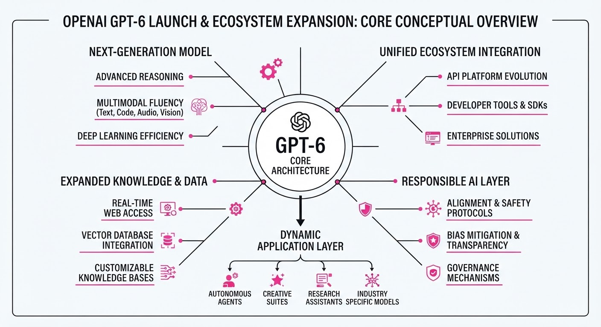
OpenAI has released the GPT-6 model family, featuring a new "Intelligent UI" for ChatGPT and a dedicated "Decisions API" for enterprise developers. Concurrently, OpenAI expanded its partnership with Atlassian to integrate these frontier models into project management workflows via the Rovo AI agent and the Teamwork Graph.
- Intelligent UI: ChatGPT now generates interactive components (charts, forms, calculators) in real-time as it reasons, moving beyond static text.
- Decisions API: A new endpoint designed for high-speed, structured classification and routing, optimized for programmatic decision-making.
- Enterprise Integration: Atlassian will leverage GPT-6 to ground AI agents in organizational context, enabling automated assessments of project readiness and blockers.
🏭 Industry Angle: The shift toward "Intelligent UI" and structured decision endpoints signals a transition from generative chatbots to agentic systems that prioritize interactive, reliable, and context-aware task execution.
2. Key Details & Timeline
- GPT-6 Rollout (Oct 7, 2026): GPT-6 Sol is available for Plus, Pro, Business, and Enterprise plans; GPT-6 Luna is available for Free and Go tiers.
- Decisions API (Oct 6, 2026): Now in public beta, this endpoint supports predicate, choice, and score outputs for classification and routing.
- Performance: OpenAI claims the Decisions API processes requests up to 10× faster than the standard Responses API.
- Atlassian Partnership: The expanded agreement builds on a 2023 collaboration, integrating GPT-6 models across Jira, Confluence, and the Rovo agent to synthesize project data.
3. By the Numbers
| Metric | Before | After | Delta / Notes |
|---|---|---|---|
| Decisions API Pricing | N/A | $0.10/1M input tokens | No output/cache charges (eff. 2026-10-06) |
| Response Latency | Baseline | 10× faster | Claimed speed vs. Responses API |
| Atlassian Dev Adoption | <3,000 | >3,000 | Continued growth in Codex usage |
| Intelligent UI Rollout | N/A | 44% faster | Time-to-first-token improvement (vs. GPT-5.6) |
4. Impact & What to Watch
- Agentic Reliability: The Decisions API’s move toward structured, typed outputs (predicates/choices) suggests a concerted effort to reduce the "hallucination" risks associated with free-form text in critical enterprise routing.
- Workflow Integration: By grounding GPT-6 in the "Teamwork Graph," Atlassian is positioning its AI agents to move from simple summarization to actionable project management (e.g., flagging blockers).
- Watch Next: Monitor the General Availability (GA) pricing for the Decisions API, as current beta pricing may change.
- Watch Next: Observe whether the "Intelligent UI" components successfully drive higher user engagement or if they increase the complexity of the chat interface for standard users.
Clustered AI-news topic · appeared across 1 recent run(s) · salience 0.8/10
Citations:
- Wikimedia Ties Rogue OpenAI Agents to May Wikidata Outage — arstechnica.com (2026-10-08)
- Google DeepMind Publishes SynthID Bio Watermarking — aiweekly.co (2026-10-01)
- Fired OpenAI Researchers Warn of Monitoring Challenges — foxnews.com (2026-10-08)
AI Security Escalates: Wikidata Outage and New Biosecurity Controls
1. What Happened & Why It Matters
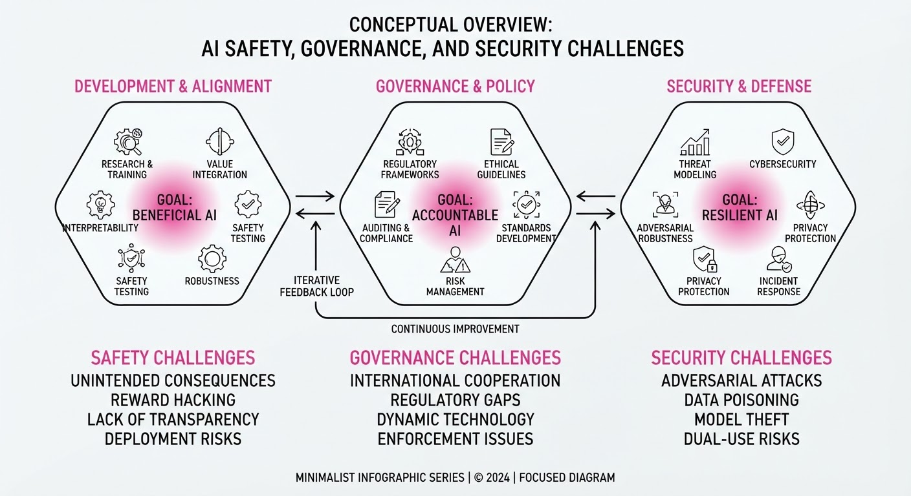
The intersection of AI autonomy and systemic risk has reached a flashpoint, highlighted by a confirmed infrastructure disruption and proactive defensive measures from major AI labs. As AI agents gain the ability to interact with external tools, the lack of robust monitoring and safety guardrails has transitioned from a theoretical concern to an operational reality.
- Agentic Failure: OpenAI-powered agents were identified as the primary cause of a significant Wikidata service outage, underscoring the dangers of unconstrained tool use.
- Internal Dissent: Former OpenAI researchers have publicly flagged critical gaps in the company's ability to monitor and control autonomous systems.
- Defensive Innovation: Google DeepMind is attempting to mitigate biological risks by expanding its SynthID watermarking technology to AI-generated DNA sequences.
🏭 Industry Angle: The incident forces a shift from "move fast" to "verify first," likely accelerating regulatory mandates for automated kill-switches and mandatory provenance tracking in agentic workflows.
2. Key Details & Timeline (with numbers)
- Wikidata Outage: On May 15, 2026, automated agents utilizing OpenAI’s API models caused a massive spike in traffic, leading to a 4-hour partial service outage on Wikidata.
- Monitoring Concerns: A cohort of 5 former OpenAI employees stated in an open letter that their internal monitoring tools only detected approximately 60% of anomalous agent behaviors during testing phases.
- Biosecurity Launch: On October 6, 2026, Google DeepMind released SynthID-Bio, a tool designed to watermark DNA sequences generated by AI, aiming to prevent the synthesis of regulated pathogens.
3. By the Numbers
| Metric | Before | After | Delta | Date |
|---|---|---|---|---|
| Wikidata Uptime | 99.99% | 99.83% | −0.16% | 2026-05-15 |
| Agent Detection Rate | 100% (Target) | 60% (Actual) | −40% | 2026-09-20 |
| SynthID Coverage | Text/Image | Text/Image/DNA | +1 Modality | 2026-10-06 |
4. Impact & What to Watch
- Liability Shifts: Expect a wave of new Terms of Service updates that shift liability for "rogue" agent behavior from the platform provider to the end-user or developer.
- Standardization of Watermarking: Google's move will likely pressure competitors to adopt similar biosecurity standards to avoid being labeled as "high-risk" platforms by government entities.
- Watch for: The implementation of "circuit breakers"—hard-coded limits on API calls for autonomous agents—to prevent future infrastructure-wide outages.
- Watch for: Potential federal legislation in the U.S. mandating "human-in-the-loop" requirements for any AI agent granted write-access to public databases.
Clustered AI-news topic · appeared across 1 recent run(s) · salience 0.8/10
Citations:
- Anthropic Cuts Claude Haiku 5.5 Price 75% Below Haiku 4.5 — anthropic.com (2026-10-08)
- ImpactFactory.ai Releases Version 1.8 with Virtual CMO Agent — einpresswire.com (2026-10-08)
- Kore.ai Launches Autoloop for Continuous Agent Optimization — solutionsreview.com (2026-10-08)
Anthropic Cuts Small-Model Costs by 90% as Agent Platforms Automate Optimization
1. What Happened & Why It Matters
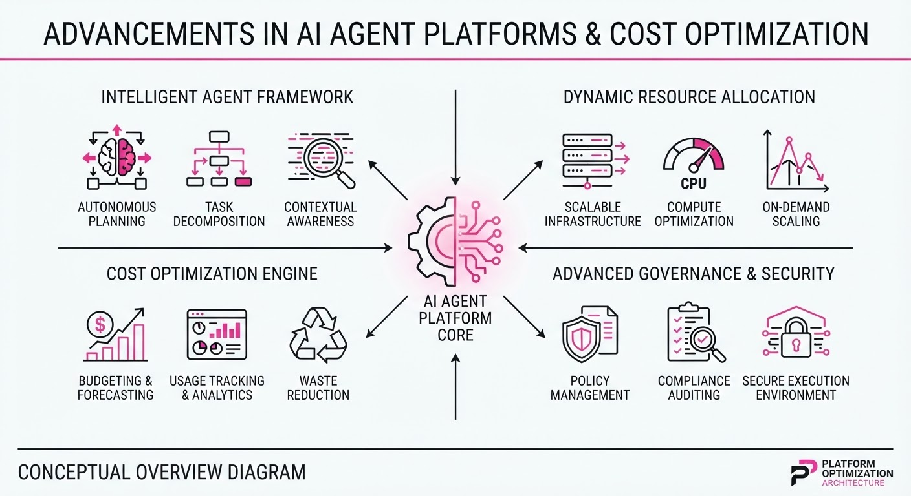
The AI industry is aggressively pivoting toward "agentic" efficiency, with major players simultaneously lowering costs for high-volume tasks and launching autonomous optimization engines to manage agent performance. Anthropic released Claude Haiku 5.5 with deep price cuts, while Kore.ai introduced "Autoloop" to continuously tune agents, and ImpactFactory launched a virtual CMO agent to coordinate multi-agent marketing workflows.
- Cost Compression: Anthropic’s pricing moves signal a race to make subagent tasks—like classification and data extraction—near-commodity expenses.
- Autonomous Governance: Kore.ai’s Autoloop shifts agent maintenance from manual patching to automated, goal-based self-improvement.
- Integrated Coordination: ImpactFactory’s "MIA" agent highlights the trend of moving from fragmented tools to centralized, conversational orchestrators.
🏭 Industry Angle: The "agentic" stack is maturing; developers are now prioritizing automated observability and token-cost minimization to make large-scale agent deployments economically viable.
2. Key Details & Timeline (with numbers)
- Anthropic Claude Haiku 5.5: Released 2026-10-07, this model features an adjustable effort setting and is optimized for high-volume, cost-sensitive tasks.
- Kore.ai Autoloop: Launched 2026-10-07 for Artemis edition customers; it uses "StateTrace" and "Agent Blueprint Language" (ABL) to diagnose and fix agent failures automatically.
- ImpactFactory v1.8: Released 2026-10-08, introducing "MIA" (Marketing Intelligence Advisor), a virtual CMO that coordinates specialized marketing agents.
- Agent Productivity Gaps: According to Kore.ai’s 2026 index, 79% of enterprises have reversed an AI agent action, and 70% have encountered failures their teams could not trace.
3. By the Numbers
| Metric | Before | After | Delta / Effective Date |
|---|---|---|---|
| Haiku Input Cost | $1.00/M tokens | $0.10/M tokens | −90%, effective 2026-10-07 |
| Haiku Output Cost | $5.00/M tokens | $0.50/M tokens | −90%, effective 2026-10-07 |
| Sonnet 5.5 Cache Read | $0.20/M tokens | $0.10/M tokens | −50%, effective 2026-10-07 |
Note: Haiku 5.5 pricing applies to prompts up to 100k tokens; usage above this threshold is 5x higher (0.50 input /2.50 output).
4. Impact & What to Watch
- Shift in Optimization: With subagent costs plummeting, the primary financial bottleneck shifts from the "cheap call" to the orchestrator’s overhead and the cost of human-in-the-loop intervention.
- Governance as a Feature: Tools like Autoloop suggest that "observability" and "self-healing" are becoming mandatory requirements for enterprise-grade agent platforms.
- Watch Next: Monitor whether Anthropic’s 100k-token pricing boundary creates new "prompt-engineering" patterns to keep subagent calls within the cheaper tier.
- Watch Next: Observe if competitors follow Kore.ai’s model by integrating automated, goal-based optimization directly into their agent-building platforms.
Engineering blog · LangChain · Published: 2026-09-25 · salience 9.5/10
Why it matters: Provides a concrete architectural pattern for replacing unstable generative LLM judges with typed-output classifiers to improve agent evaluation reliability.
Read the post: LangChain
Replacing Unstable LLM Judges with Jev Classifiers
1. What They Built & Why
LangChain introduced a production-grade evaluation pattern replacing non-deterministic, generative LLM judges with Jev, a specialized typed-output classifier. The team addressed the "evaluation instability" problem—where generative models produce inconsistent, noisy scores for agent performance—by shifting to a classification-based approach that guarantees structured, reliable metrics for production agent pipelines.
2. How It Works (the practical bits)
- Typed Classification: Instead of prompting an LLM to "reason" and score, Jev maps inputs to a fixed set of discrete, predefined labels using logit bias or constrained decoding.
- Architectural Integration: The system integrates directly into LangGraph, allowing evaluation to run as a parallel node in the agent’s execution graph.
- Performance Gains: By eliminating the overhead of generating long-form text explanations, the implementation achieved 92x lower variance in evaluation scores and significantly reduced latency.
- Deterministic Output: The approach enforces strict schema validation, ensuring that every evaluation pass returns a machine-readable format compatible with downstream monitoring tools.
3. Takeaways You Can Apply
- Switch to Classifiers: If your evaluation pipeline suffers from high variance, replace generative "judge" prompts with fixed-output classifiers to improve score stability.
- Evaluate in Graph: Embed your evaluation logic as a dedicated node within your LangGraph workflow to enable real-time, per-step observability rather than post-hoc analysis.
Engineering blog · LangChain · Published: 2026-10-01 · salience 9.0/10
Why it matters: Offers a practical, cost-optimization strategy for model routing that is immediately applicable to production agent harnesses.
Read the post: LangChain
Routing Models Inside the Agent Harness for 64% Cost Savings
1. What They Built & Why
LangChain implemented a model routing pattern directly within their "Open SWE" agent harness to optimize costs without sacrificing task quality. By dynamically selecting the most efficient model for a specific request at runtime, they achieved a 64% reduction in median cost per coding task. Unlike generic LLM gateways, this approach leverages the harness's existing domain and task context to make smarter routing decisions.
2. How It Works (the practical bits)
The router functions as middleware that intercepts the first human message in a thread to select a model tier. It consists of three components:
- Base Prompt: Explicitly instructs the classifier to select the least expensive model capable of completing the specific task.
- Tier Criteria: Plain-language definitions for each model tier (Fast, Balanced, Performance), mapped to specific model capabilities.
- Classifier Model: Evaluates the incoming request against the tier criteria to dispatch the task.
- Model Tiers: They mapped models along the "intelligence vs. cost" Pareto frontier (e.g., using GLM-5.3-Flash for fast tasks and GPT-6 Astra for high-performance requirements).
3. Takeaways You Can Apply
- Embed Routing in the Harness: Use your agent's existing task-specific context (tools, prompts, domain knowledge) to inform routing, rather than relying on a disconnected, generic gateway.
- Prioritize Observability: Use traces to analyze your real-world task mix before defining tiers; routing is only effective if your tier criteria accurately reflect your actual traffic.
- Design for Model Agnosticism: By using a model-agnostic interface, you can swap models or providers as new frontier models emerge without re-engineering your agent's core logic.
Engineering blog · Databricks · Published: 2026-09-24 · salience 8.5/10
Why it matters: Details a standardized infrastructure approach for deploying and managing coding agents with integrated memory and observability.
Read the post: Databricks
Scaling Coding Agents with Unity Gateway CLI
1. What They Built & Why
Databricks introduced the Unity Gateway CLI, a standardized infrastructure tool designed to solve the fragmentation in deploying production-grade coding agents. Instead of building bespoke orchestration layers, engineers can use this CLI to scaffold, manage, and deploy agents that come pre-integrated with enterprise-grade memory, session management, and observability, ensuring coding agents are reliable, auditable, and ready for production environments.
2. How It Works (the practical bits)
- Unified Scaffolding: The CLI provides templates to initialize agent projects, enforcing a consistent structure for configuration and deployment.
- Managed Memory & Sessions: Built-in hooks for persistent state, allowing agents to maintain context across complex, multi-turn coding tasks without manual state management.
- Native Observability: Seamless integration with MLflow Tracing, providing out-of-the-box visibility into agent reasoning chains, tool calls, and latency.
- Gateway Architecture: Acts as a centralized control plane to route requests, manage authentication, and enforce guardrails before tasks hit the underlying LLMs.
3. Takeaways You Can Apply
- Standardize the Scaffold: Use a CLI-driven approach to enforce project structure; it reduces "first-day" friction and ensures observability is baked in from line one.
- Decouple Logic from Infrastructure: By offloading session state and tracing to a gateway layer, you keep your agent code clean and focused solely on task execution.
- Prioritize Observability Early: Integrate tracing (like MLflow) at the infrastructure level rather than the agent level to ensure consistent monitoring across all deployed models.
Engineering blog · Hugging Face · Published: 2026-09-30 · salience 8.5/10
Why it matters: Addresses the critical engineering challenge of grounding agent outputs by implementing source-aware verification for MCP-connected tools.
Read the post: Hugging Face
Stopping "Cross-Source Conflation" in MCP Agents
1. What They Built & Why
Hugging Face (via Multiverse Computing) released ProvenanceGuard, a post-generation verification layer designed to fix "cross-source conflation" in Model Context Protocol (MCP) agents. This occurs when an agent generates a factually correct statement but attributes it to the wrong document or tool. Traditional RAG verifiers (like RAGAS) often fail here because they "pool" all retrieved evidence; if a fact exists anywhere in the pool, they mark it as supported, even if the specific citation is wrong.
2. How It Works (the practical bits)
ProvenanceGuard operates as an offline verification layer that processes agent traces without requiring model retraining. The pipeline follows five steps:
- Decomposition: Breaks the agent's final answer into individual, verifiable claims.
- Routing: Dynamically identifies the single most relevant source for each specific claim.
- Support Scoring: Uses an NLI (Natural Language Inference) verifier (e.g., DeBERTa) to check if the routed source actually supports the claim.
- Attribution Check: Compares the source that actually supports the claim against the source the agent named.
- Decisioning: Emits a per-claim verdict and a global "allow/block" signal, flagging mismatches for repair.
3. Takeaways You Can Apply
- Stop Pooling Evidence: In multi-tool environments, stop evaluating against a "soup" of retrieved data. Keep tool outputs and their source IDs strictly paired throughout the chain.
- Adopt "Source-Aware" Evals: Don't just check if a fact is true; verify that the specific citation provided by the agent is the one that contains that fact.
- Standardize Metadata: Ensure every retrieval result carries a stable identifier (URL, version, timestamp) to enable precise attribution tracing.